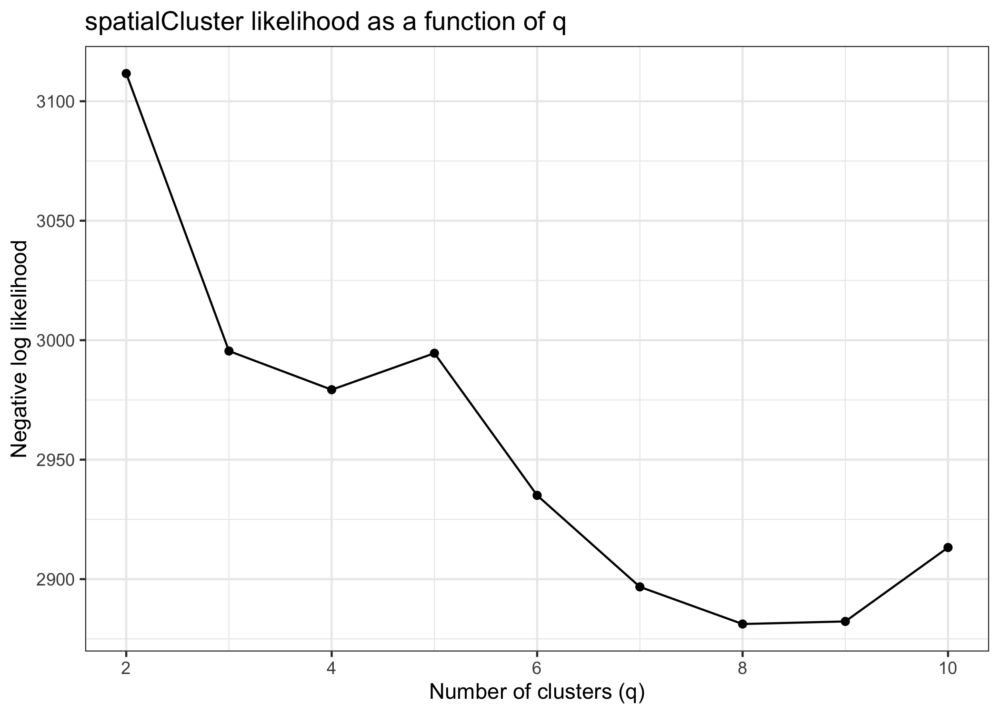
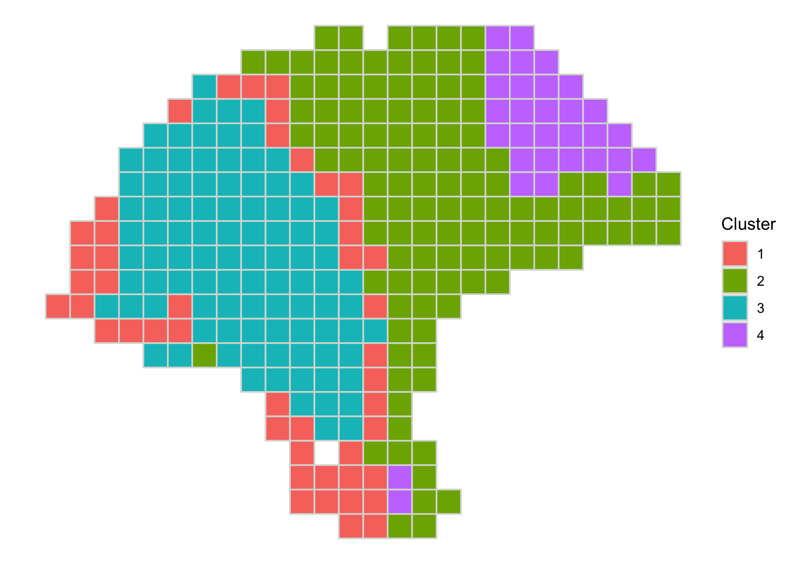
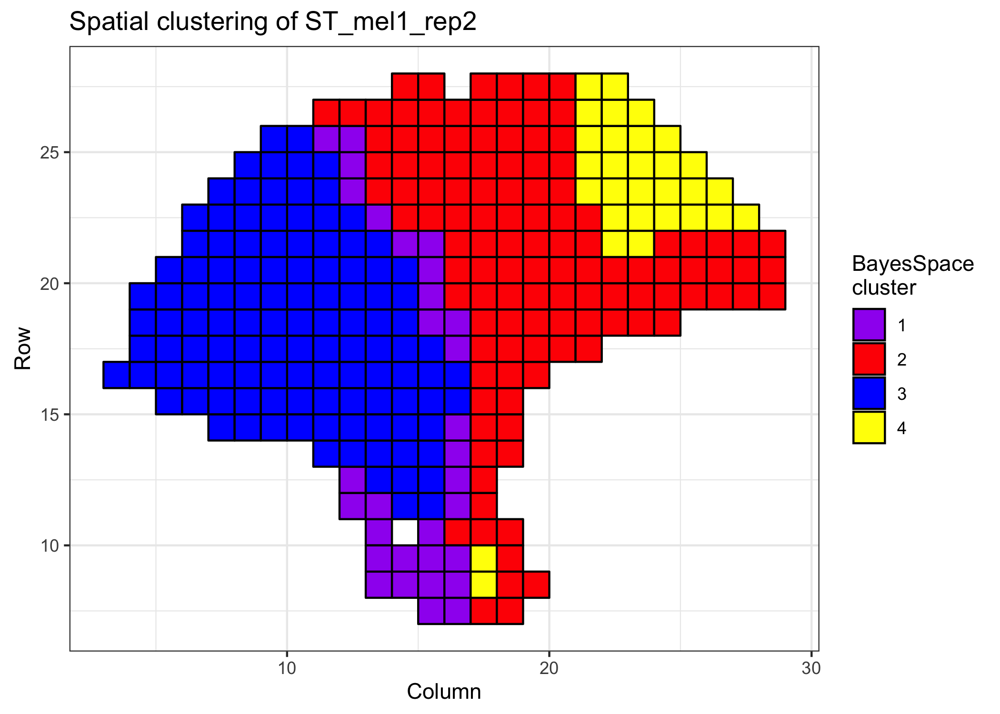
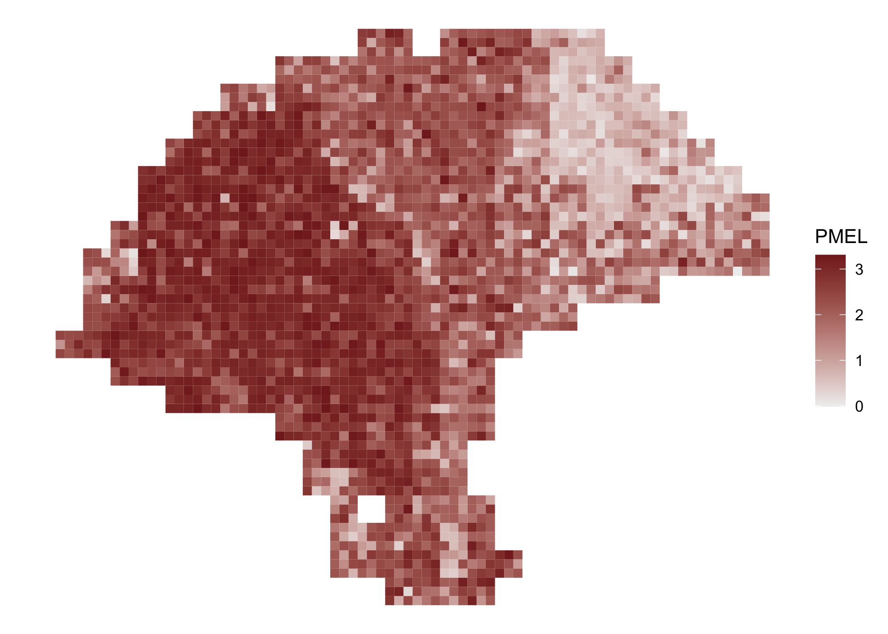
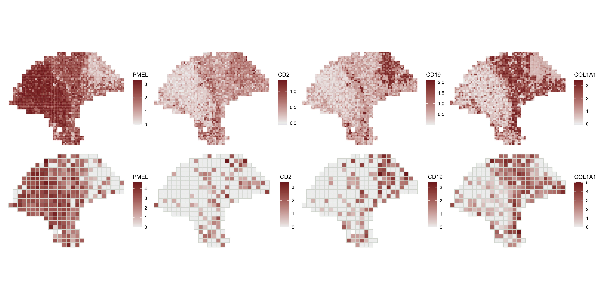

BayesSpace
Edward Zhao, Matt Stone, Xing Ren, and Raphael Gottardo
2020-10-12
Source:vignettes/BayesSpace.Rmd
BayesSpace.RmdPreparing your experiment for BayesSpace
Loading data
BayesSpace supports three ways of loading a SingleCellExperiment for analysis.
Visium datasets processed with Space Ranger can be loaded directly via the readVisium() function. This function takes only the path to the Space Ranger output directory (containing the spatial/ and filtered_feature_bc_matrix/ subdirectories) and returns a SingleCellExperiment.
sce <- readVisium("path/to/spaceranger/outs/")
Second, all datasets analyzed for the BayesSpace manuscript are readily accessible via the getRDS() function. This function takes two arguments - the name of the dataset, and the name of the sample in the dataset.
melanoma <- getRDS(dataset="2018_thrane_melanoma", sample="ST_mel1_rep2")
Finally, SingleCellExperiment objects can be constructed manually from a counts matrix and tables of row and column data. BayesSpace only requires that spot array coordinates be provided as columns named row and col in colData. (Note that enhancement of Visium datasets additionally requires the pixel coordinates of each spot in the tissue image, but in this case the dataset should be loaded with readVisium(), which loads these data automatically.)
library(Matrix)
rowData <- read.csv("path/to/rowData.csv", stringsAsFactors=FALSE)
colData <- read.csv("path/to/colData.csv", stringsAsFactors=FALSE, row.names=1)
counts <- read.csv("path/to/counts.csv.gz",
row.names=1, check.names=F, stringsAsFactors=FALSE))
sce <- SingleCellExperiment(assays=list(counts=as(counts, "dgCMatrix")),
rowData=rowData,
colData=colData)We’ll continue with the melanoma sample from the 2018 Spatial Transcriptomics paper for the remaining examples in this vignette.
Pre-processing data
BayesSpace requires minimal data pre-processing, but we provide a helper function to automate it.
spatialPreprocess() log-normalizes the count matrix and performs PCA on the top n.HVGs highly variable genes, keeping the top n.PCs principal components. Additionally, the spatial sequencing platform is added as metadata in the SingleCellExperiment for downstream analyses. If you do not wish to rerun PCA, running spatialPreprocess() with the flag skip.PCA=TRUE will only add the metadata BayesSpace requires.
Here, we omit log-normalization as all datasets available through getRDS() already include log-normalized counts.
set.seed(102) melanoma <- spatialPreprocess(melanoma, platform="ST", n.PCs=7, n.HVGs=2000, log.normalize=FALSE)
Clustering
Selecting the number of clusters
We can use the qTune() and qPlot() functions to help choose q, the number of clusters to use in our analysis.
-
qTune()runs the BayesSpace clustering algorithm for multiple specified values ofq(by default, 3 through 7) and computes their average pseudo-log-likelihood. It accepts any arguments tospatialCluster(). -
qPlot()plots the pseudo-log-likelihood as a function ofq; we suggest choosing aqaround the elbow of this plot.

Clustering with BayesSpace
The spatialCluster() function clusters the spots, and adds the predicted cluster labels to the SingleCellExperiment. Typically, as we did for the analyses in the paper, we suggest running with at least 10,000 iterations (nrep=10000), but we use 1,000 iteration in this demonstration for the sake of runtime. (Note that a random seed must be set in order for the results to be reproducible.)
set.seed(149) melanoma <- spatialCluster(melanoma, q=4, platform="ST", d=7, init.method="mclust", model="t", gamma=2, nrep=1000, burn.in=100, save.chain=TRUE)
Both the mclust initialization (cluster.init) and the BayesSpace cluster assignments (spatial.cluster) are now available in the SingleCellExperiment’s colData.
head(colData(melanoma)) #> DataFrame with 6 rows and 5 columns #> row col sizeFactor cluster.init spatial.cluster #> <integer> <integer> <numeric> <numeric> <numeric> #> 7x15 7 15 0.795588 1 1 #> 7x16 7 16 0.307304 1 1 #> 7x17 7 17 0.331247 2 2 #> 7x18 7 18 0.420747 3 2 #> 8x13 8 13 0.255453 1 1 #> 8x14 8 14 1.473439 1 1
Visualizing spatial clusters
We can plot the cluster assignments over the spatial locations of the spots with clusterPlot().
clusterPlot(melanoma)

As clusterPlot() returns a ggplot object, it can be customized by composing with familiar ggplot2 functions. Additionally, the argument palette sets the colors used for each cluster, and clusterPlot() takes additional arguments to geom_polygon() such as size or color to control the aesthetics of the spot borders.
clusterPlot(melanoma, palette=c("purple", "red", "blue", "yellow"), color="black") + theme_bw() + xlab("Column") + ylab("Row") + labs(fill="BayesSpace\ncluster", title="Spatial clustering of ST_mel1_rep2")

Enhanced resolution
Clustering at enhanced resolution
The spatialEnhance() function will enhance the resolution of the principal components, and add these PCs as well as predicted cluster labels at subspot resolution to a new SingleCellExperiment. As with our demonstration of spatialCluster() above, we are using fewer iterations for the purpose of this example (nrep=1000) than we recommend in practice (nrep=100000 or greater).
melanoma.enhanced <- spatialEnhance(melanoma, q=4, platform="ST", d=7, model="t", gamma=2, jitter_prior=0.3, jitter_scale=3.5, nrep=1000, burn.in=100, save.chain=TRUE)
The enhanced SingleCellExperiment includes an index to the parent spot in the original sce (spot.idx), along with an index to the subspot. It adds the offsets to the original spot coordinates, and provides the enhanced cluster label (spatial.cluster).
head(colData(melanoma.enhanced)) #> DataFrame with 6 rows and 9 columns #> spot.idx subspot.idx spot.row spot.col row col #> <numeric> <integer> <integer> <integer> <numeric> <numeric> #> subspot_1.1 1 1 7 15 7.33333 15.3333 #> subspot_2.1 2 1 7 16 7.33333 16.3333 #> subspot_3.1 3 1 7 17 7.33333 17.3333 #> subspot_4.1 4 1 7 18 7.33333 18.3333 #> subspot_5.1 5 1 8 13 8.33333 13.3333 #> subspot_6.1 6 1 8 14 8.33333 14.3333 #> imagerow imagecol spatial.cluster #> <numeric> <numeric> <numeric> #> subspot_1.1 7.33333 15.3333 1 #> subspot_2.1 7.33333 16.3333 2 #> subspot_3.1 7.33333 17.3333 2 #> subspot_4.1 7.33333 18.3333 2 #> subspot_5.1 8.33333 13.3333 1 #> subspot_6.1 8.33333 14.3333 1
We can plot the enhanced cluster assignments as above.
clusterPlot(melanoma.enhanced)
Enhancing the resolution of gene expression
BayesSpace operates on the principal components of the gene expression matrix, and spatialEnhance() therefore computes enhanced resolution PC vectors. Enhanced gene expression is not computed directly, and is instead imputed using a regression algorithm. For each gene, a model using the PC vectors of each spot is trained to predict the spot-level gene expression, and the fitted model is used to predict subspot expression from the subspot PCs.
Gene expression enhancement is implemented in the enhanceFeatures() function. BayesSpace predicts expression with xgboost by default, but linear and Dirichlet regression are also available via the model argument. When using xgboost, we suggest automatically tuning the nrounds parameter by setting it to 0, although this comes at the cost of increased runtime (~4x slower than a pre-specified nrounds in practice).
enhanceFeatures() can be used to impute subspot-level expression for all genes, or for a subset of genes of interest. Here, we’ll demonstrate by enhancing the expression of four marker genes: PMEL (melanoma), CD2 (T-cells), CD19 (B-cells), and COL1A1 (fibroblasts).
markers <- c("PMEL", "CD2", "CD19", "COL1A1") melanoma.enhanced <- enhanceFeatures(melanoma.enhanced, melanoma, feature_names=markers, nrounds=0)
By default, log-normalized expression (logcounts(sce)) is imputed, although other assays or arbitrary feature matrices can be specified.
logcounts(melanoma.enhanced)[markers, 1:5] #> subspot_1.1 subspot_2.1 subspot_3.1 subspot_4.1 subspot_5.1 #> PMEL 1.9915980 2.3403625 2.7037618 2.3716977 2.3419490 #> CD2 0.8769051 0.4643852 0.3995831 0.4734218 0.7090108 #> CD19 0.8493783 0.6528369 0.4164957 0.5032829 0.5426237 #> COL1A1 0.3487490 2.9331527 0.5175455 1.6931008 1.3629673
Diagnostic measures from each predictive model, such as rmse when using xgboost, are added to the rowData of the enhanced dataset.
rowData(melanoma.enhanced)[markers, ] #> DataFrame with 4 rows and 4 columns #> gene_id gene_name is.HVG enhanceFeatures.rmse #> <character> <character> <logical> <numeric> #> PMEL ENSG00000185664 PMEL TRUE 0.804628 #> CD2 ENSG00000116824 CD2 TRUE 0.614575 #> CD19 ENSG00000177455 CD19 TRUE 0.697328 #> COL1A1 ENSG00000108821 COL1A1 TRUE 0.704845
Visualizing enhanced gene expression
Spatial gene expression is visualized with featurePlot().
featurePlot(melanoma.enhanced, "PMEL")

Here, we compare the spatial expression of the imputed marker genes.
enhanced.plots <- purrr::map(markers, function(x) featurePlot(melanoma.enhanced, x)) patchwork::wrap_plots(enhanced.plots, ncol=2)

And we can compare to the spot-level expression.
spot.plots <- purrr::map(markers, function(x) featurePlot(melanoma, x)) patchwork::wrap_plots(c(enhanced.plots, spot.plots), ncol=4)

Accessing Markov chains
If save.chain is set to TRUE in either spatialCluster() or spatialEnhance(), the chain associated with the respective MCMC run is preserved to disk as an HDF5 file. The path to this file is stored in the SingleCellExperiment’s metadata at metadata(sce)$h5.chain, and can be read directly using mcmcChain().
The chain is provided as a coda::mcmc object, which can be analyzed with TidyBayes or as a matrix. The object has one row per iteration, with the values of the parameters concatenated across the row. Columns are named with the parameter name and index (if any).
chain <- mcmcChain(melanoma) chain[1:5, 1:5] #> lambda[1,1] lambda[1,2] lambda[1,3] lambda[1,4] lambda[1,5] #> [1,] 0.01000000 0.0000000000 0.00000000 0.00000000 0.000000000 #> [2,] 0.09722481 -0.0070321724 -0.04138590 0.06750923 -0.016571238 #> [3,] 0.10343843 -0.0089752921 -0.05442281 0.05637694 -0.002035676 #> [4,] 0.13778018 -0.0111105221 -0.06975277 0.03503423 -0.024012108 #> [5,] 0.12861416 -0.0009938442 -0.06240135 0.03770599 -0.026459410
To remove the HDF5 file from disk and remove its path from the metadata, use removeChain().